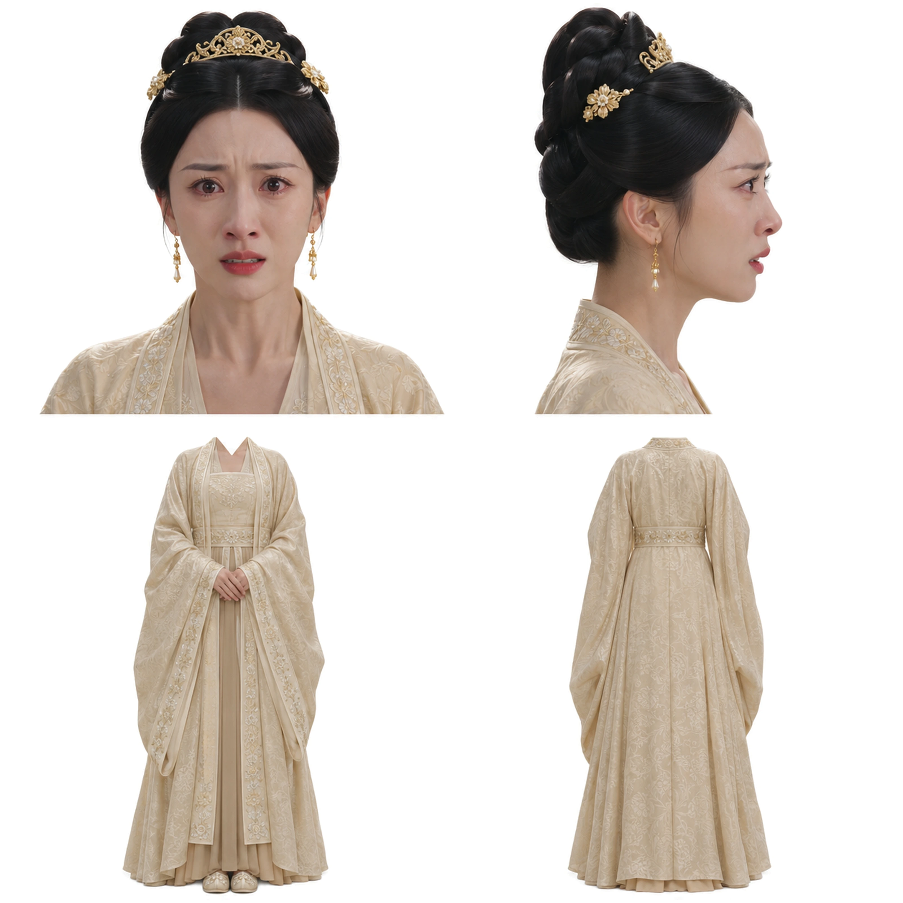
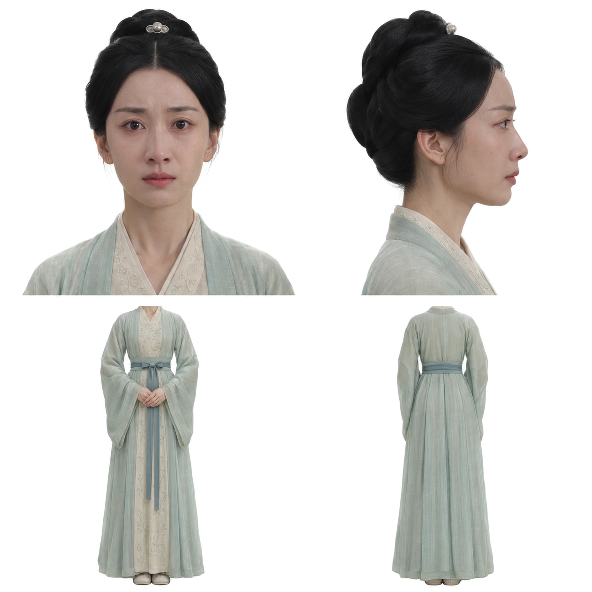
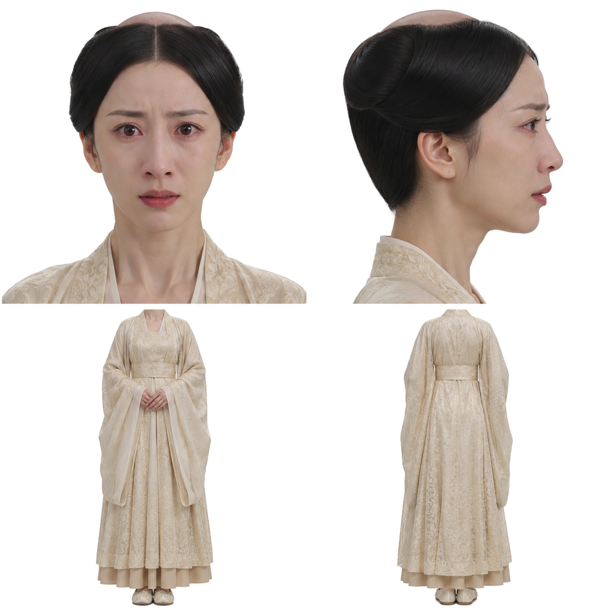
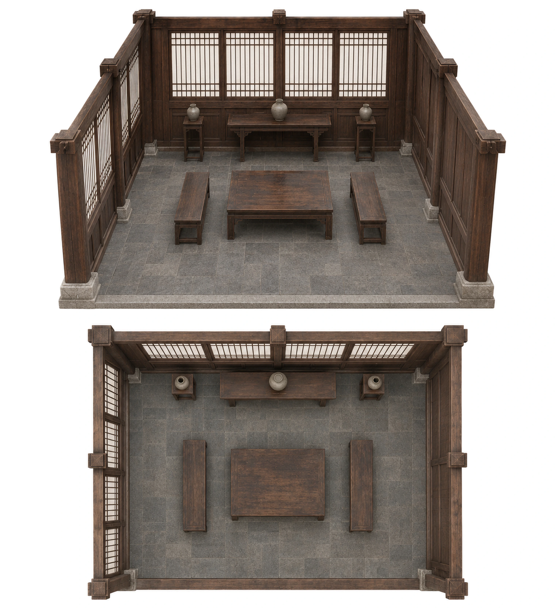
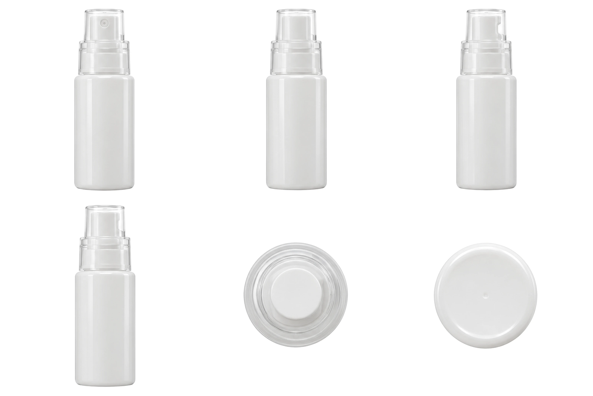
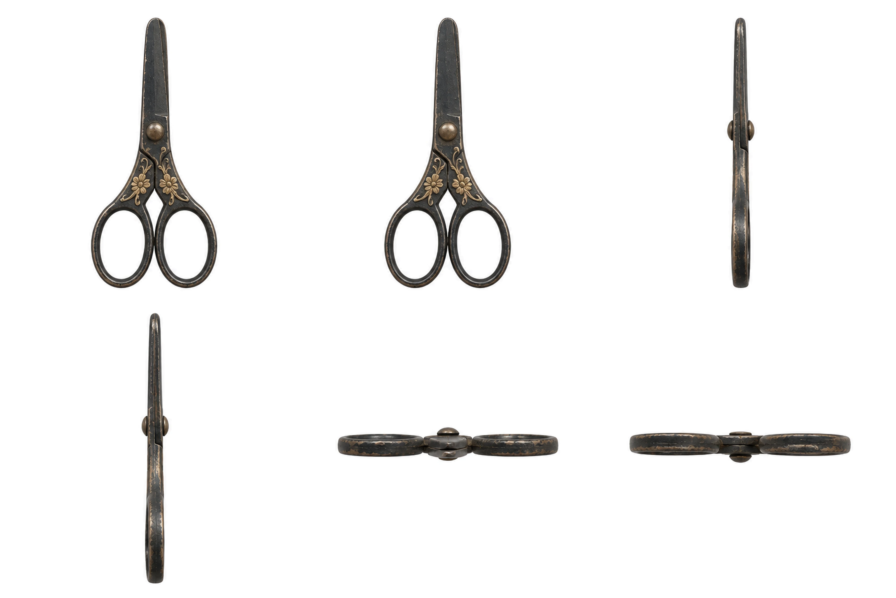
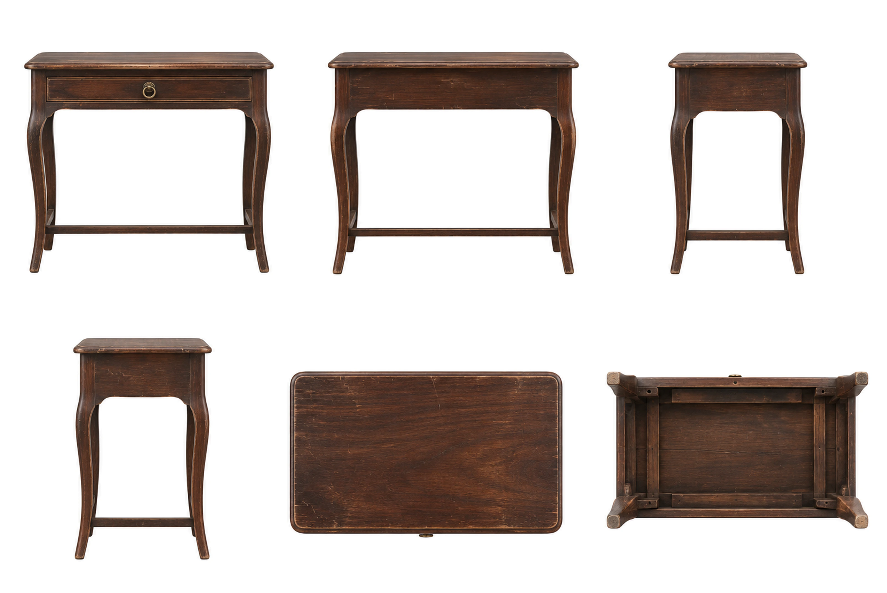

带货种草
生发喷雾
正在连接在线视频…
视频简介
宅院小姐被长辈质问，得知妹妹可能代嫁。她回到梳妆室因稀发愈发焦急，侍女递来喷瓶。通过发顶特写与跳切，广告将稀发画面切换成饱满发髻，主仆在镜前惊喜收尾。
在快手观看原视频 ↗制作资产
角色资产

米白衣小姐
因发量与婚事受压力的宅院小姐。 米白绣边裙袍，前段金发饰，结果镜头为饱满中分髻。 成片未完整展示的方位按可见造型补全。
深衣长辈
向小姐施压并提及让妹妹代替出嫁。 深紫棕交领长袍、黑高髻，质问时稳站在对面。 成片未完整展示的方位按可见造型补全。

淡蓝衣侍女
在梳妆室拉住小姐，递给她白色喷瓶。 浅青裙袍、蓝腰带。递物以双手完成。 成片未完整展示的方位按可见造型补全。

米白衣小姐稀发状态
同一小姐的稀发造型，梳妆前的镜头连续性状态。 保留两侧黑发盘整与头顶稀发区，服装保持米白绣袍。 成片未完整展示的方位按可见造型补全。
场景资产

木构宅院正厅
木构宅院正厅的场景视觉设定，用于空间布局、光影与镜头背景。
木格窗梳妆室
木格窗梳妆室的场景视觉设定，用于空间布局、光影与镜头背景。
道具资产

白色按压喷雾瓶
细白圆柱泵瓶，半透明压头，不带印字。 侍女双手递交，小姐举起瓶身试喷，道具瓶口朝下方发区。 成片未完整展示的方位按可见造型补全。
圆形铜镜
暗棕圆镜带矮木支座，镜背为素铜。 放在梳妆桌中部供人物看发顶，反射另拍。 成片未完整展示的方位按可见造型补全。
黑金发冠
浅金叶形小冠，深色固定底座。 用于开场的完整妆发造型。 成片未完整展示的方位按可见造型补全。

旧式小剪刀道具
暗色小剪形道具，双环握柄。 只拍手持与被拉住的动作，用钝头表演道具。 成片未完整展示的方位按可见造型补全。

深木梳妆桌
深色旧木、平桌面和细腿。 桌上放圆镜，保持小姐坐位和侍女进画方向。 成片未完整展示的方位按可见造型补全。
剧本与分镜
完整剧本与分镜脚本
带货种草 · 生发喷雾 原片时长 34.81 秒 故事梗概 宅院小姐被长辈质问，得知妹妹可能代嫁。她回到梳妆室因稀发愈发焦急，侍女递来喷瓶。通过发顶特写与跳切，广告将稀发画面切换成饱满发髻，主仆在镜前惊喜收尾。 人物 小姐在正厅与梳妆室之间经历由愤怒到惊喜。长辈推动婚事压力。侍女阻止冲动动作并带入商品。小姐有常规和稀发两种发型状态。 场景 宅院正厅用格窗和木构建立冲突；梳妆室用铜镜、桌面和侧窗组织反打。 道具用途 喷瓶是广告展示物，圆镜用于主观验证，发冠与小剪刀交代两阶段动作，梳妆桌作为固定位置。 剧本与分镜 按原片抽帧重建的复拍制作稿。画面未能确认的对白、音效与镜头节奏按下表执行。 | 镜号 | 画面内容 | 镜头视角 | 使用资产 | 动作描述 | 台词/旁白 | 音效 | 单镜头时长 | | 01 | 小姐含泪问长辈 | 正脸近景切特写 | 米白衣小姐、黑金发冠、木构宅院正厅 | 先咬住情绪，继而抬眼发问 | 小姐：为什么偏偏要这样？ | 室内底音 | 4.00秒 | | 02 | 长辈说出由妹妹代嫁 | 双人过肩反打 | 深衣长辈、米白衣小姐、木构宅院正厅 | 长辈向前一步，小姐留在原处 | 长辈：只能由你妹妹代你出嫁。 | 衣袖摩擦 | 5.60秒 | | 03 | 小姐捂住头顶转身 | 正面中景接侧面跟拍 | 米白衣小姐稀发状态、木格窗梳妆室 | 她捂住发顶，急忙走到镜前 | — | 脚步、裙摆声 | 4.40秒 | | 04 | 小姐持剪，侍女赶来拉住 | 镜后斜角中近景 | 小姐、淡蓝衣侍女、圆形铜镜、旧式小剪刀道具 | 侍女稳住小姐手腕，劝她先停下 | 侍女：小姐，先放下。 | 桌面轻碰 | 4.50秒 | | 05 | 侍女递来白色瓶，小姐检查瓶子 | 双手到胸口特写 | 白色按压喷雾瓶、深木梳妆桌、淡蓝衣侍女 | 交接后小姐转动瓶身，再看向镜面 | — | 瓶壳轻响 | 4.30秒 | | 06 | 小姐朝发顶试喷 | 侧面近景到发顶特写 | 白色按压喷雾瓶、米白衣小姐稀发状态 | 按压一次，镜头接稀发区 | — | 喷雾短响 | 4.10秒 | | 07 | 发顶通过化妆跳切变饱满 | 头顶极近景切铜镜反射 | 米白衣小姐、圆形铜镜 | 同一头部位置切换至饱满发型 | — | 轻亮过渡音 | 4.40秒 | | 08 | 小姐和侍女在镜前互看 | 双人近景 | 米白衣小姐、淡蓝衣侍女、铜镜 | 小姐以双手扶发髻，侍女微笑 | — | 惊喜短音收束 | 3.51秒 | 时长合计 34.81 秒